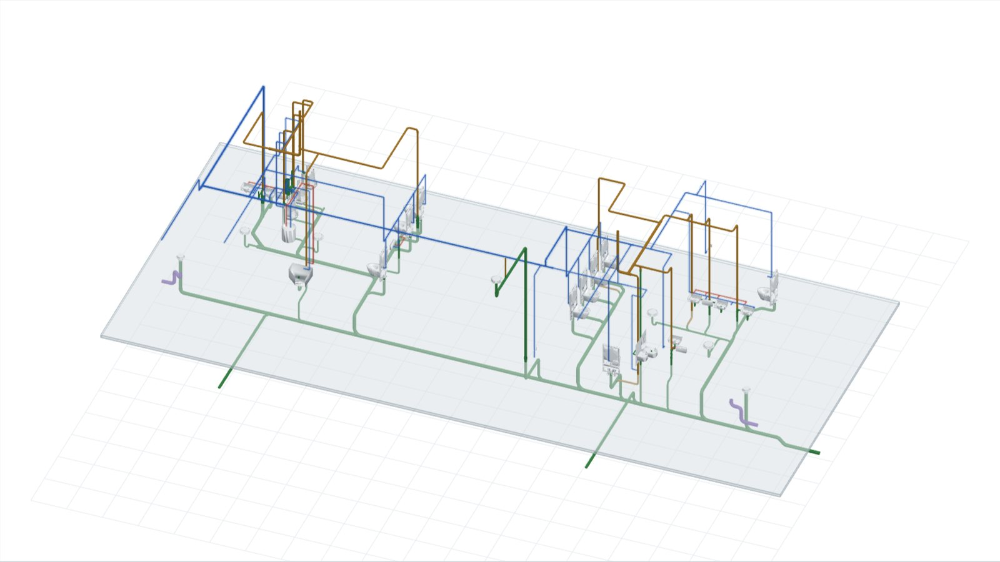

I model plumbing and piping in Revit that contractors can install from, coordinate it in Navisworks, and write Dynamo and Python tools for the repetitive parts. I'm now looking for my next role in the US or Canada.
The plumbing for two restroom groups in a single-level U.S. building, modelled in Revit with Autodesk Fabrication Parts and rebuilt here from the Navisworks export. It plays in install order: underground sanitary and storm first, then waste and vent above the slab, then the insulated cold and hot water and the fixtures.

Restroom core, plumbing modelRebuilt from a Navisworks export
Selected work
The drawings in this section are schematics I made to show the kind of problem each role involved. Views from real models are in the project snapshots further down.
Cold water rerouted under a beamSchematic, not to scale
Coordinated plumbing and piping for U.S. commercial projects
ENG, 2026
I model plumbing and mechanical piping in Revit with native families and Autodesk Fabrication Parts, then run clash detection in Navisworks against the architectural, structural, HVAC, electrical and fire protection models. Each week I take the open clashes to the coordination meeting with the U.S. engineering team, and to constructability meetings with the general contractor and trades.
Rainwater and greywater reuseSchematic, not to scale
Plumbing design for luxury hotels and resorts
Utopia Design, 2025 to 2026
I designed domestic water, sanitary, storm, rainwater harvesting and greywater systems for hospitality projects in several countries, including spas, pools and guest suites. Every country had its own plumbing code, so each design had to be checked against local rules before it went out.
Tools: Revit MEP, Navisworks, AutoCAD, ACC
Shop drawing under reviewSchematic, not to scale
Plumbing shop drawings, then leading the team
M&S Mechanical, 2023 to 2025
I started by modelling plumbing for U.S. commercial and residential buildings and producing shop drawings for fabrication and installation. From January 2025 I led the plumbing drafting team: reviewing models and shop drawings before they went to the client, and helping newer drafters with Revit and coordination.
A mid-rise multifamily building with ground-floor retail, a pool and amenities. I built the fabrication-level plumbing model in Revit with Autodesk Fabrication Parts: sanitary, vent, storm, and domestic cold and hot water with recirculation. These views went out as 3D details, enlarged plans and sleeve drawings for field installation.
A lot of time in a plumbing model goes into steps a script can do. These are two of mine, built with Dynamo and Python. I also build small Revit and Navisworks add-ins.
Plan view before and after the scriptSchematic, not to scale
Tags and dimensions for shop drawings
Adds size tags and dimension strings to the pipes in shop drawing views, instead of clicking through every pipe by hand on each sheet.
Sleeves placed at a slabSchematic, not to scale
Sleeves where pipes cross slabs
Finds every place a pipe passes through a slab and places a sleeve there, so the sleeve layout doesn't depend on someone spotting each penetration.
Experience
Oct 2026 – now
Job Captain (OJT)ENG, remote
Promoted five months after joining. Learning to take plumbing and piping drawing sets from the coordinated model all the way to issue.
May 2026 – Oct 2026
BIM Specialist, plumbing and mechanical pipingENG, remote
Revit models with Fabrication Parts, Navisworks coordination with a U.S. engineering team.
Apr 2025 – Jun 2026
Plumbing Designer (BIM)Utopia Design, remote; part-time until Sep 2025, then full-time
Plumbing for luxury hotels and resorts in several countries.
Jan 2025 – Sep 2025
Plumbing Drafting LeadM&S Mechanical
Led the plumbing drafting team on U.S. projects.
Sep 2023 – Dec 2024
MEP DesignerM&S Mechanical, Medellín
Plumbing models and shop drawings for U.S. commercial and residential projects.
Jun 2023 – Dec 2024
CAD Drafter IInfinigy Solutions, freelance
Permit-ready AutoCAD drawings for telecom sites in California.
What I work with
Modelling
Revit MEP
Autodesk Fabrication Parts (CADmep)
AutoCAD
Coordination
Navisworks clash detection
Autodesk Construction Cloud
Bluebeam
Procore
Automation
Dynamo
Python
Revit and Navisworks add-ins
Plumbing design
Domestic water
Sanitary and vent
Storm drainage
Rainwater and greywater reuse
Service colours
Each piping service keeps one colour across the drawings and the 3D model. The pale jacket marks insulated pipe.
Plumbing
SANSanitary
VVent
SDStorm drain
SODStorm overflow drain
GWSanitary grease
CDCondensate from HVAC
CWCold water
CHWChilled water
HWHot water
HWRHot water return
Mechanical piping
HHWSHeating water supply
HHWRHeating water return
CHWSChilled water supply
CHWRChilled water return
RLRefrigerant liquid
RSRefrigerant suction
Education and training
Bachelor's degree, mechanical engineering
Universidad Industrial de Santander, 2013 – 2020
IELTS General Training
British Council, 2026
American Society of Plumbing Engineers courses, 2025
Design of domestic water systems, part 2
Design of domestic hot water systems, part 1
Pipe hangers and supports
Piping insulation
Intro to heat pump water heaters
Automated technology for building water management
Get in touch
I'm looking for a BIM Coordinator, BIM Specialist or plumbing BIM designer role in the US or Canada. In Canada, ideally Calgary, Edmonton, Toronto, Vancouver or Ottawa. On-site, hybrid and remote all work for me.